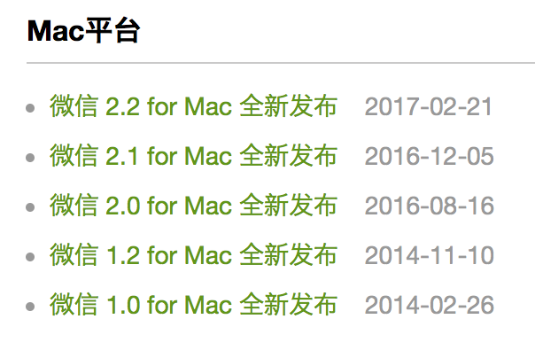
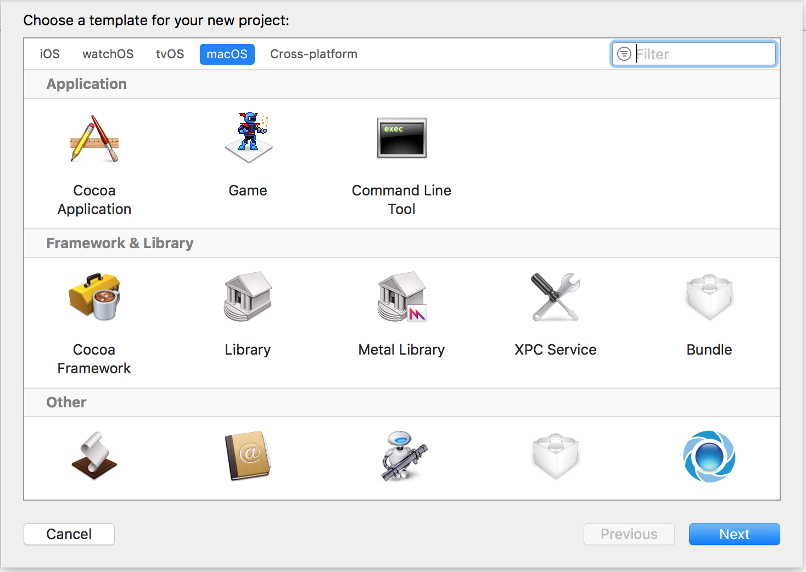
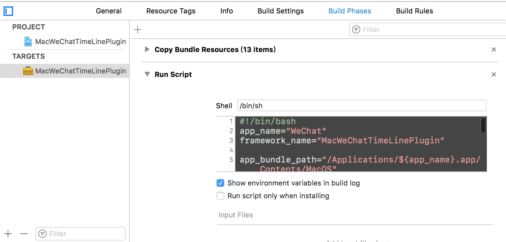
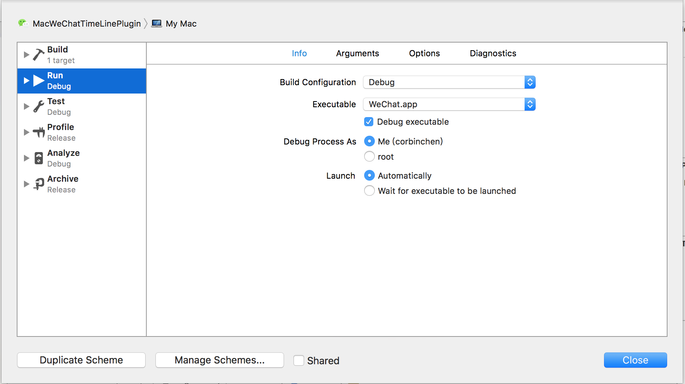
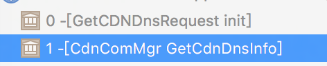
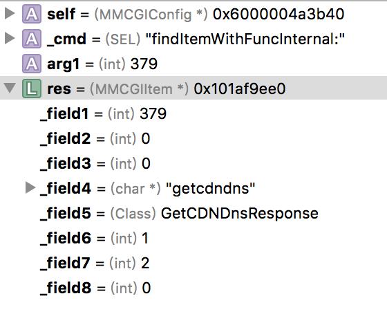
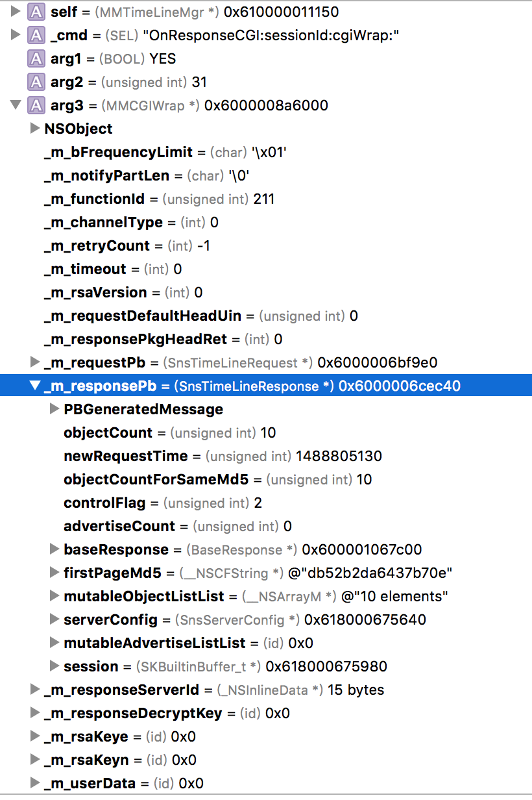
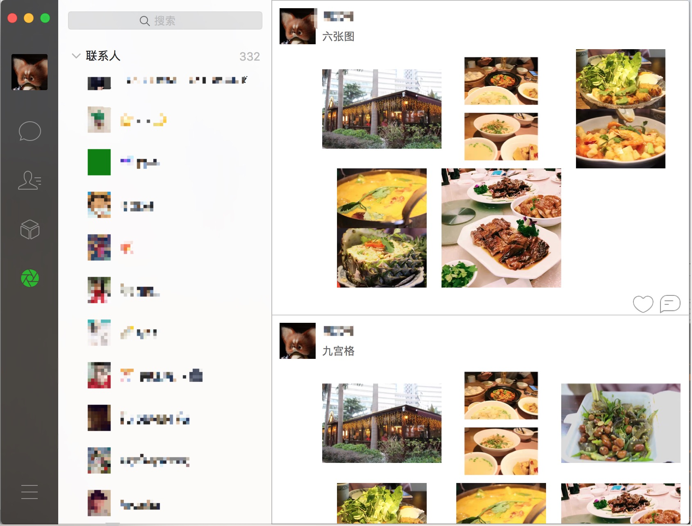

事出有因
从前，有一款Mac软件，在2014.11.10发布了1.2版本，然后就没有然后了。 可能这期间，Mac微信开发组解散了又重建，解散了又重建。。。直到2016.08.16，它终于发布了2.0版本，这就是Mac微信。
不可否认，它越来越好用，但它应该可以更好用。例如，对于朋友圈重度用户，在Mac上使用微信聊天之余，浏览下朋友圈，想来也是极好的。
也是早在2.0版本，我发现了Mac微信中已经存在朋友圈相关网络接口代码，没想到半年多过去了，它还是这副死样。俗话说得好，自己动手，丰衣足食，干！！！

注：接下来内容涉及修改微信，相关代码纯属技术研究与爱好，请大家尊重腾讯公司对微信软件的知识产权，不要乱来。
厉兵秣马
要想工作做得好,前期基础要打好！
- 与iOS类似，Mac上的hook也是以注入动态库的方式实现的。Xcode提供了动态库的模版，我们只需要简单的几行脚本就可以实现注入动态库。

选择Build Phases->New Run Script Phase
#!/bin/bash app_name="WeChat" framework_name="MacWeChatTimeLinePlugin" app_bundle_path="/Applications/${app_name}.app/Contents/MacOS" app_executable_path="${app_bundle_path}/${app_name}" app_executable_backup_path="${app_executable_path}_" framework_path="${app_bundle_path}/${framework_name}.framework" # 备份WeChat原始可执行文件 if [ ! -f "$app_executable_backup_path" ] then cp "$app_executable_path" "$app_executable_backup_path" fi cp -r "${BUILT_PRODUCTS_DIR}/${framework_name}.framework" ${app_bundle_path} insert_dylib --all-yes "${framework_path}/${framework_name}" "$app_executable_backup_path" "$app_executable_path"
|

2.编辑Scheme，选择executable为WeChat.app

3.编辑Podfile
platform :osx, '10.10' target 'MacWeChatTimeLinePlugin' do pod 'JRSwizzle', '~> 1.0' end
|
4.宏定义
#define CBGetClass(classname) objc_getClass(#classname) #define CBRegisterClass(superclassname, subclassname) { Class class = objc_allocateClassPair(CBGetClass(superclassname), #subclassname, 0);objc_registerClassPair(class); } #define CBHookInstanceMethod(classname, ori_sel, new_sel) { NSError *error; [CBGetClass(classname) jr_swizzleMethod:ori_sel withMethod:new_sel error:&error]; if(error) NSLog(@"%@", error); } #define CBHookClassMethod(classname, ori_sel, new_sel) { NSError *error; [CBGetClass(classname) jr_swizzleClassMethod:ori_sel withClassMethod:new_sel error:&error]; if(error) NSLog(@"%@", error); } #define CBGetInstanceValue(obj, valuename) object_getIvar(obj, class_getInstanceVariable([obj class], #valuename)) #define CBSetInstanceValue(obj, valuename, value) object_setIvar(obj, class_getInstanceVariable([obj class], #valuename), value)
|
如此一来，基础工作就做好了，现在按下Command+R, 就能debug注入了插件的微信了。
知己知彼
在实现Mac端朋友圈前，先看看iOS端是怎么实现的。怎么看呢？
从UI入手，我们知道，iOS上实现下拉刷新，是通过检测tableView的scrollOffest来实现的，很容易就发现了调用链。
-[WCTimeLineViewController scrollViewDidEndDragging:willDecelerate:] -[EGORefreshTableHeaderView egoRefreshScrollViewDidEndDragging:] -[WCTimeLineViewController refreshHead] -[WCFacade updateTimelineHead] -[WCTimelineMgr updateDataHead:0] -[WCTimelineDataProvider updateWithReferID:LatestID:] -[WCTimelineDataProvider requestForSnsTimeLineRequest:minID:lastRequestTime:]
|
进入
-[WCTimelineDataProvider requestForSnsTimeLineRequest:minID:lastRequestTime:]
|
可以看到，朋友圈的刷新是通过创建SnsTimeLineRequest，然后监听请求响应进行下一步处理、显示。
那么，要实现在Mac上刷朋友圈的目的，最基础也是最重要的，就是要发送SnsTimeLineRequest，然后监听SnsTimeLineResponse。
那么，Mac端微信是怎么创建请求，然后监听响应的呢。
我在-[GetCDNDnsRequest init]下了个断点

之后在-[CdnComMgr GetCdnDnsInfo]中可以看到，大概发网络请求的流程是
GetCDNDnsRequest *request = [[GetCDNDnsRequest alloc] init]; request.baseRequest = [MMCGIRequestUtil InitBaseRequestWithScene:0x0]; MMCGIWrap *cgiWrap = [[MMCGIWrap alloc] init]; [cgiWrap setM_requestPb:request]; [cgiWrap setM_functionId:0x*]; [[[MMServiceCenter defaultCenter] getService:[MMCGIService class] RequestCGI: cgiWrap delegate:self];
|
剩下的就是在iOS中确认SnsTimeLineRequest的参数了。
一鼓作气
万事俱备，只欠东风！
@interface MMTimeLineMgr () <MMCGIDelegate, MMService> @end - (void)updateTimeLineHead { SnsTimeLineRequest *request = [[CBGetClass(SnsTimeLineRequest) alloc] init]; request.baseRequest = [CBGetClass(MMCGIRequestUtil) InitBaseRequestWithScene:0]; request.clientLatestId = 0; request.firstPageMd5 = @""; request.lastRequestTime = 0; request.maxId = 0; request.minFilterId = 0; MMCGIWrap *cgiWrap = [[CBGetClass(MMCGIWrap) alloc] init]; cgiWrap.m_requestPb = request; cgiWrap.m_functionId = 211; MMCGIService *cgiService = [[CBGetClass(MMServiceCenter) defaultCenter] getService:CBGetClass(MMCGIService)]; NSUInteger sessionId = [cgiService RequestCGI:cgiWrap delegate:self]; NSLog(@"%lu", (unsigned long)sessionId); } - (void)OnResponseCGI:(BOOL)arg1 sessionId:(unsigned int)arg2 cgiWrap:(id)arg3 { NSLog(@"%d %d %@", arg1, arg2, arg3); } @end
|
Command + R !!!
满怀希望，按下两个键，结果。。。sessionId为0！！！
进入-[MMCGIService RequestCGI:delegate:] 可以看到，开始请求前需要从MMCGIConfig找到对应的MMCGIItem，很明显，找不到。没关系，照猫画虎，给它new一个就是了。

@implementation NSObject (MacWeChatTimeLinePlugin) #pragma mark - MMCGIConfig - (const struct MMCGIItem *)cb_findItemWithFuncInternal:(int)arg1 { struct MMCGIItem *res = [self cb_findItemWithFuncInternal:arg1]; if (arg1 == 211) { res = malloc(sizeof(struct MMCGIItem)); res->_field1 = 211; res->_field2 = 0; res->_field3 = 0; res->_field4 = "mmsnstimeline"; res->_field5 = CBGetClass(SnsTimeLineResponse); res->_field6 = 1; res->_field7 = 2; res->_field8 = 0; } return res; } @end static void __attribute__((constructor)) initialize(void) { NSLog(@"++++++++ MacWeChatTimeLinePlugin loaded ++++++++"); CBHookInstanceMethod(MMCGIConfig, @selector(findItemWithFuncInternal:), @selector(cb_findItemWithFuncInternal:)); }
|
打断点在-[MMTimeLineMgr OnResponseCGI:sessionId:cgiWrap:]

成功了, 在SnsTimeLineResponse的mutableObjectListList可以看到有10条朋友圈数据，接下来就是将数据处理，显示出来的工作了。
效果图
